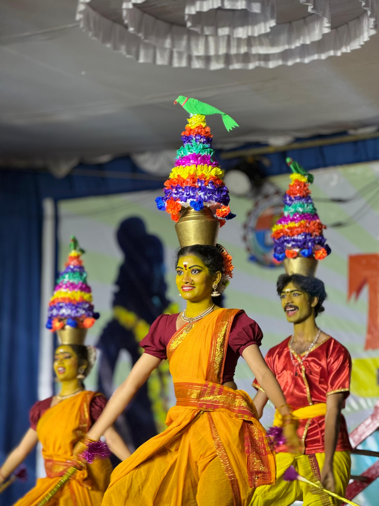

Traditional folk training
Featured Folk Dance Forms
Learn expressive, energetic folk traditions with attention to rhythm, formations, costume discipline, and cultural context.

Karagam
Karagattam is a devotional folk dance from Tamil Nadu performed in praise of Goddess Mariamman. Dancers balance decorated pots on their heads while performing energetic and graceful movements to traditional folk music.

Garaga
Garaga is a traditional village dance performed during temple festivals and cultural celebrations in Andhra Pradesh. Artists carry decorated pots and dance rhythmically with devotion and coordination.
More forms taught
Rhythm, storytelling, and community traditions.
Urumulu
Urumulu is a vibrant folk performance involving energetic Urumi drum playing and synchronized movements during festivals and processions.
Kolattam
Kolattam is a colorful folk dance performed using sticks in rhythmic coordination representing unity, joy, and celebration.
Lambadi Dance
Lambadi dance is known for colorful costumes, mirror work ornaments, rhythmic songs, and graceful tribal movements.
Burrakatha
Burrakatha combines storytelling, music, dance, and drama to narrate mythological and historical stories.
Pulivesham
Pulivesham is a lively tiger dance performed during festivals symbolizing strength, courage, and celebration.
Dappu Dance
Dappu dance is a powerful folk performance centered around energetic drum beats and synchronized movements.
Full List of Folk Dance Forms
- Urumulu
- Dappu Dance
- Kolatam
- Gobbi Dance
- Gangireddu
- Tappeta Gullu
- Lambadi Dance
- Pulivesham
- Dhimsa
- Butta Bommalu
- Keelu Gurram
- Garaga Dance
- Burrakatha
- Tholu Bommalata
- Harikatha
- Chindu Bhagavatam
- Pagati Veshalu
- Kommu Koya Dance
- Koya Dance
- Savara Dance
- Chenchu Dance
- Yerukala Dance
- Mathuri Dance
- Jakkula Natyam
- Basava Natyam
- Kolannalu Dance
- Naga Nrityam
- Jatara Dance Forms
Cultural Importance
Traditional folk arts preserve the heritage, beliefs, and lifestyles of communities. These dance forms connect generations through music, rhythm, storytelling, and devotion while promoting cultural pride and artistic expression.